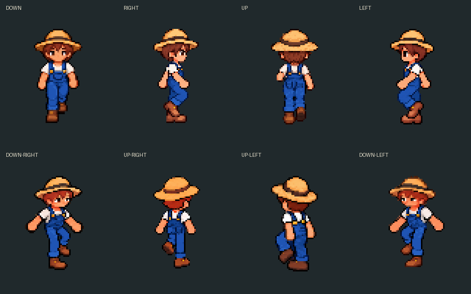

Up-left legs / up-right hips — revised walk preview
Current and candidate side by side, eight frames at 10 FPS, shown at the actual FHD artwork size. Awaiting your motion review.
Inspect diagonal walking framesFrame 1 / 8Revised walk in the actual Godot renderer — day and night
Standing still — integrated fix
Idle → walk → idle / 10 FPS
Before: a lifted walking foot held as idle

Production renderer / day and night
30Hz core movement and view clock; a capture every 100ms. Two preserved walk loops between grounded stops.
Pixel density comparison — same FHD display size
The original artwork has about 64 native pixels of character height, shown at about 128 screen pixels. These review-only samples reduce detail to 32 and 16 pixels and enlarge it back with nearest sampling. Movement, screen size and colors remain the same; small seams, pockets and hands lose detail. Runtime sprites are unchanged.